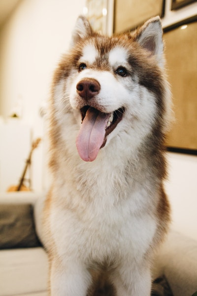

Alaskan Malamutes are amongst the oldest domestic breed of dogs that has a powerful and sturdy physique having a lot of strength, stamina and endurance. It usually resembles a wolf and plays the role of wolf in many movies. Alaskan malamute is a very intelligent dog which displays a lot of independence and exercises regularly.
They are a very playful breed, always accept challenges and never turn out to be boring. This breed is not recommended for the first time dog purchaser as the stubbornness and independent nature of the dog is so challenging and difficult to handle. They are affectionate, loyal, dignified and playful. This breed has a life span of 12 to 16 years of age.
As malamutes are very smart and intelligent breed of dogs, they should be enrolled in training sessions right from the beginning when they are young. They have a tendency to outwit their masters keeping into consideration their size and built. It is also advised to give them obedience training when they are young because as they grow old they might become bored and very destructive.
This breed’s outer layer of fur is rough and coarse and the inside layer is woolen and oily and they shed their coat twice in a year. Malamutes exist in various colours and their facial marks are the most versatile features. Further, the colours of coat range from light dull gray, red, sable to shades of black. The face of this breed is visibly attractive white along with the some parts of legs and feet.
Some malamutes have a visible solid colour on their foreheads or just around their neck which is usually white blaze. The nails should be trimmed twice or thrice a month for the dog’s hygiene. Malamutes are very much sensitive to heat and sunlight that is why they are found in arctic regions. As they have a dense layer of outer coat so they are able to survive very cold weather.
Though malamutes are a healthy breed, but at times they might face certain chronic health problems. Make sure to receive health clearances for this breed while you purchase it. Some of the common health conditions suffered by them are cataracts, Hip dysplasia, Hemeralopia, elbow dysplasia etc.
It is so wonderful when owning an Alaskan Husky because this is one of the rarest sorts from countries to the world. However, apart from their cuties, you should know how to take care of them carefully. This is a great challenge for those who love pooches. Here is how!
Because the Alaskan Husky is a highly intelligent breed, he typically responds well to training. Start training your husky as early as possible to head off the development of problem behaviors – if you wait too long to start training your dog could become willful or headstrong. Positive reinforcement training methods are recommended for this breed and it is best to keep your training sessions short and fun so your dog doesn’t get bored.
It is good news to hear that Alaskans do not need to take care much about their fur. This is a great coat to protect their skin and body in every weather condition.
You just need to take them a shower on a regular basis and you can comb to help them have smooth fur. Of course, they also have shedding process but this is not a common point. Each year, they will get new coat naturally.
The longevity ranges between 12 and 15 years. They are considered as a healthy breed. However, they still have some diseases which come from their genetics like other dog sorts around the world such as Rentinal Atrophy, Larynx, Hypothyroidism, etc.
The American Kennel Club describes the Siberian husky as "loyal, mischievous and outgoing." Caring for this high energy but friendly canine is a bit more work than the average dog. Expect to give your Siberian husky plenty of exercise, but never let him off the leash. Remember, these working sled dogs were born to run. While he's fine with other dogs, the husky has strong prey instincts, so living with smaller animals -- including felines -- probably isn't a good idea. While a husky is an excellent family dog, he's no watchdog. Friends, strangers, he welcomes one and all.
Siberian huskies aren't the easiest dogs to train, so they aren't a good choice for those who have never before had a dog. If you do have dog experience, patience and persistence will get you through the husky training experience. Huskies are smart, but they require an owner who can assume an alpha role, so the dog knows that you are the leader in your household pack, not him. Socializing your dog as much as possible and taking him to obedience classes starting in puppyhood makes training easier.
While your husky sports a lot of hair, he's not a terrible shedder. Of course, that doesn't include the semi-annual ritual known as "blowing the coat," when husky hair will overtake your home. Most of the time, brushing him a couple of times a week suffices to get rid of old hair. During shedding season, you may need to use a coat rake to keep up with the hair loss and brush him once or twice daily. Siberian huskies rarely need bathing as they are among the cleanest of canines, and don't have a doggy odor.
Siberian huskies are a relatively healthy breed, but do suffer from some genetic issues. These primarily concern eye and orthopedic problems, although epilepsy also occurs in the huskies. Eye issues include: